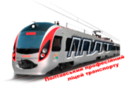

Портфолiо викладача
Полтавського професiйного лiцею транспорту
Головна
Портфолiо
Навчаємосьᨆ
Електрогазозварник 2 розряду
Слюсар з ремонту КТЗ 3 розряду
Слюсар з ремонту КТЗ 4 розряду
Методичнi розробки
До урокуᨆ
Конспекти урокiв
Перевiрка знань
Вiдео
Фотогалерея
Ковп Олександр Миколайович
Дата народження:
11 березня 1985 року
Рівень освіти:
вища
Освітньо-кваліфікаційний рівень:
спеціаліст
Стаж роботи у ліцеї:
14 років
Загальний стаж роботи:
18 років
Стаж педагогічної роботи:
14 років
Майстер
виробничого навчання
Проблема, над якою я працюю:
“Впровадження інноваційних технологій, як умова ефективної організації навчального процесу”
Моє педагогічне кредо:
“Довести до учнів теоретичний досвід, практичні навички та вміння”
ОСВІТА
Державний професійно-технічний навчальний заклад «Полтавський професійний ліцей транспорту» за спеціальністю
Слюсар з ремонту рухомого складу 4 розряду
Національний технічний університет «Харківський Політехнічний Інститут» за спеціальністю
Локомотиви та локомотивне господарство (Інженер рухомого складу залізниць)
КУРСИ ПІДВИЩЕННЯ КВАЛІФІКАЦІЇ
СТАЖУВАННЯ НА ТОВ "ПОЛТАВСЬКИЙ ТЕПЛОВОЗОРЕМОНТНИЙ ЗАВОД"
2018 рік, Слюсар з ремонту колісних транспортних засобів 5 (п'ятого) розряду
2018 рік, Електрогазозварник 5 (п'ятого) розряду
КУРСИ ПІДВИЩЕННЯ КВАЛІФІКАЦІЇ
СТАЖУВАННЯ НА ТОВ "ПОЛТАВСЬКИЙ ТЕПЛОВОЗОРЕМОНТНИЙ ЗАВОД"
2021 рік, Слюсар з ремонту рухомого складу засобів 6 (шостого) розряду
2021 рік, Електрогазозварник 5 (п'ятого) розряду
КУРСИ ПІДВИЩЕННЯ КВАЛІФІКАЦІЇ
НАЦІОНАЛЬНА АКАДЕМІЯ ПЕДАГОГІЧНИХ НАУК УКРАЇНИ ДЗВО "УНІВЕРСИТЕТ МЕНЕДЖМЕНТУ ОСВІТИ" БІЛОЦЕРКІВСЬКИЙ ІНСТИТУТ НЕПЕРЕРИВНОЇ ПРОФЕСІЙНОЇ ОСВІТИ
2022 рік, Майстри виробничого навчання закладів професійної (професiйно-технічної) освіти
2023 рік, Викладачі професiйно-теоретичної підготовки закладів професійної (професiйно-технічної) освіти
КУРСИ ПІДВИЩЕННЯ КВАЛІФІКАЦІЇ
2022 рік, ТОВ "Академія цифрового розвитку" завершення курсу "Цифрові інструменти GOOGLE для освіти"
2022 рік, EU4Skills участь у вебінарі "Використання хмарних сервісів Microsoft Teams для організації освітнього процесу в закладах освіти"
2021 рік, Участь у вебінарі "Інноваційне зварювальне обладнання Kemppi OY"
КУРСИ ПІДВИЩЕННЯ КВАЛІФІКАЦІЇ
2022 рік, Підвищення кваліфікації для педагогічних працівників та психологів "Школа кар’єрного консультанта"
2023 рік, Сертифікат за проходження курсу "Практичні навички подолання стресу"
КУРСИ ПІДВИЩЕННЯ КВАЛІФІКАЦІЇ
ДПТНЗ "КОЗЯТИНСЬКЕ МІЖРЕГІОНАЛЬНЕ ВИЩЕ ПРОФЕСІЙНЕ УЧИЛИЩЕ ЗАЛІЗНИЧНОГО ТРАНСПОРТУ"
2023 рік, Присвоєння (підвищення) робітничої кваліфікації Помічник машиніста електровоза
КУРСИ ПІДВИЩЕННЯ КВАЛІФІКАЦІЇ
НАВЧАЛЬНО-ПРАКТИЧНИЙ ЦЕНТР «СУЧАСНИХ СЛЮСАРНИХ ТЕХНОЛОГІЙ» ПРОФЕСІЙНО-ТЕХНІЧНОГО УЧИЛИЩА №26 М.КРЕМЕНЧУК
2023 рік, Стажування за програмою "Ознайомлення із новітніми виробничими технологіями, обладнанням та матеріалами, відпрацювання практичних навичок з професії "Слюсар з ремонту колісних транспортних засобів"